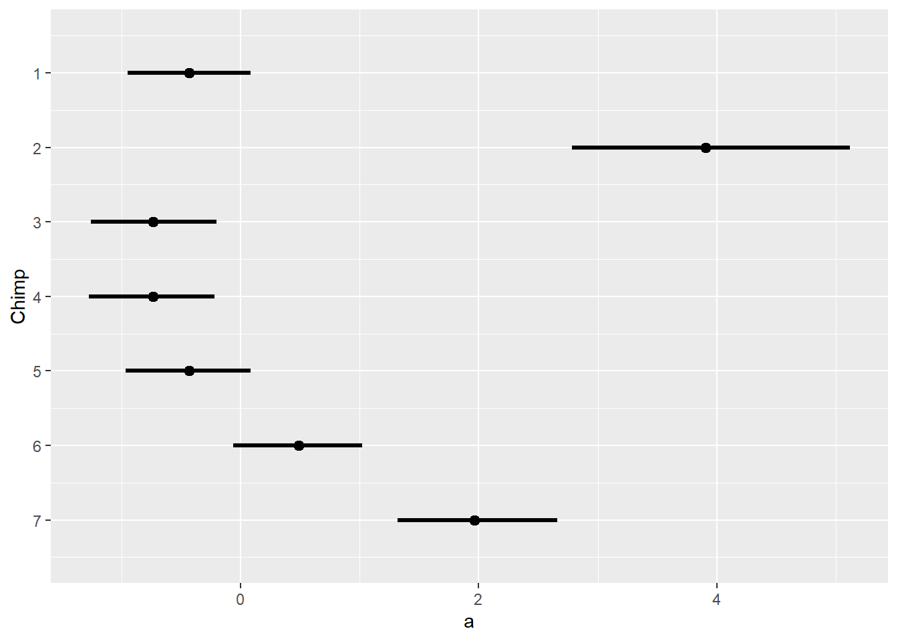
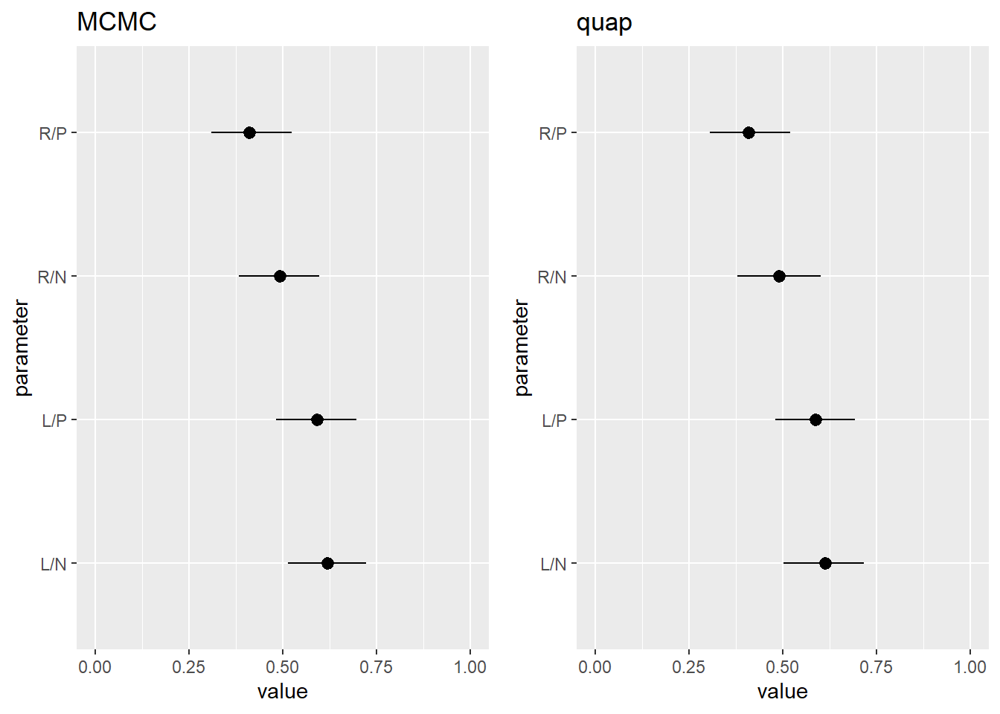
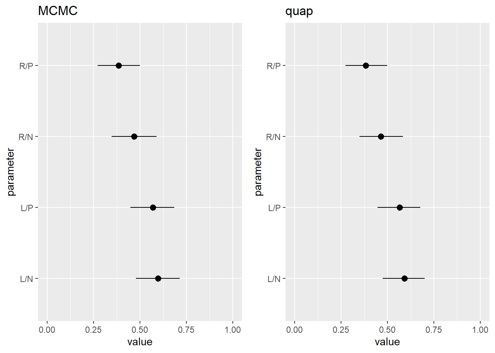

Chapter 11 God Spiked the Integers
11.1 Chapter Notes
Binomial Regression
The chapter introduces a case where we might want to use logistic regression. It describes an experiment in which chimpanzees were given the option to pull one of two levers (left or right). Each lever would deliver a tray to the chimpanzee, and also to the opposite end of the table where a partner chimpanzee may or may not be sitting. In all cases the trays delivered to the lever-pulling chimpanzee would contain food, but only one of the levers would deliver food to the partner. The aim of the experiment was to determine whether chimpanzees were more likely to pull the lever that delivers food to the other end of the table if a partner chimpanzee was present.
We start by loading the data and defining an index variable (“treatment”) that takes digits 1-4 with the following meaning:
- Right-hand lever delivers food to both ends of the table, and no partner is present.
- Left-hand lever delivers food to both ends of the table, and no partner is present.
- Right-hand lever delivers food to both ends of the table, and a partner is present.
- Left-hand lever delivers food to both ends of the table, and a partner is present.
We model the outcome that the left lever is pulled like so:
\[ \begin{aligned} L_i &\sim \text{Binomial}(1,p_i) \\ \text{logit}(p_i) &= \alpha_{actor[i]} + \beta_{treatment[i]} \\ \alpha_j &\sim \text{Normal}(0,1.5) \\ \beta_k &\sim \text{Normal}(0,0.5) \end{aligned} \]
In R:
set.seed(100)
m11.4 <- ulam( alist(
pulled_left ~ dbinom( 1 , p ) ,
logit(p) <- a[actor] + b[treatment] ,
a[actor] ~ dnorm( 0 , 1.5 ),
b[treatment] ~ dnorm( 0 , 0.5 )
) , data=data_chimp , chains=4 , log_lik=TRUE, cmdstan = TRUE )After transforming them into the outcome scale, we can plot the parameters that represent each chimpanzee:
## mean sd 5.5% 94.5%
## a1 0.3906872 0.07593051 0.2713121 0.5170867
## a2 0.9742894 0.01716667 0.9429495 0.9940104
## a3 0.3222523 0.06929863 0.2169651 0.4433149
## a4 0.3234947 0.07037946 0.2213532 0.4426394
## a5 0.3900974 0.07652739 0.2717665 0.5146987
## a6 0.6101797 0.07560688 0.4854886 0.7234966
## a7 0.8694970 0.04508907 0.7920538 0.9310104
Here, values close to zero indicate a preference for the right lever, and values close to one a preference for the left lever.
And here is the same graph for the treatment effects:

Here R and L refer to which level was the pro-social option - right or left. N and P refer to whether a partner was present. If the chimps in this experiment exhibited pro-social behaviour, we’d expect that the pro-social lever would be pulled more often in the presence of a partner. I.e. we want to compare R/P against R/N, and L/P against L/N.
We can see that when right is the pro-social option there is a slight tendency for the chimps to pull the right lever more when a partner is present. There is no similar tendency to pull the left lever more when a partner is present when the left lever is the pro-social choice.
Revisit: Recreate Figure 11.4?
11.1.1 Poisson Regression
The chapter introduces the Poisson distribution, and then sets up an example model using data on tool use among historical societies in Oceania.
We want to model tool use among these societies, with predictors populations size, and amount of contact with other populations. Our model is:
\[ \begin{aligned} T_i &\sim \text{Poisson}(\lambda_i) \\ \log \lambda_i &= \alpha_{\text{CID}[i]}+ \beta_{\text{CID}[i]} \log P_i \\ \alpha_j &\sim \text{Normal}(3,0.5) \\ \beta_j &\sim \text{Normal}(0,0.2)\\ \end{aligned} \]
Here it is in R:
set.seed(100)
m11.10 <- ulam( alist(
T ~ dpois( lambda ),
log(lambda) <- a[cid] + b[cid]*P,
a[cid] ~ dnorm( 3 , 0.5 ),
b[cid] ~ dnorm( 0 , 0.2 )
), data=data_tool , chains=4 , log_lik=TRUE, cmdstan = TRUE )We plot the posterior predictions:
Here blue dots are high contact, and red low contact societies. The size of the points is scaled by Pareto k-value.
Revisit: Theory-based model - include
Negative Binomial Models
The chapter introduces an extension of the Poisson generalised linear model that uses the negative binomial distribution. This adds the ability to adjust our model for data over varying exposures. A toy example is introduced to explain.
We own a monastery that produces manuscripts at a rate \(\lambda\) of 1.5 per day. We simulate data over a month:
set.seed(47)
num_days <- 30
y <- rpois(num_days, 1.5)We are considering acquiring a new monastery, and want to compare its productivity. However this one does not keep a daily record of manuscript production, but instead a weekly one. The exposure is different: seven days instead of one. Our task will be to model the rate of manuscript production at each monastery in order to inform our purchasing decision.
The (unknown to us) daily rate of the second monastery is actually 0.5 manuscripts per day, and we simulate 4 weeks worth of data on that basis:
set.seed(47)
num_weeks <- 4
y_new <- rpois(num_weeks, 0.5*7)We collect these two sets of data into one data frame.
data_manu <- tibble(y_all = c(y,y_new),
exposure = c(rep(1,30),rep(7,4)),
monastery = c(rep(0,30),rep(1,4))) # monastery indicatorThe introduction of a new term into our model allows us to compare rates across our varying exposures. This term is the logarithm of the exposure.
data_manu <- data_manu %>% mutate(log_exp = log(exposure))
set.seed(100)
m11.12 <- quap( alist(
y ~ dpois( lambda ),
log(lambda) <- log_exp + a + b*monastery,
a ~ dnorm( 0 , 1 ),
b ~ dnorm( 0 , 1 )
), data=data_manu )Why does the addition of this term adjust for the varying exposures?
If we think about \(\lambda\) as a rate we can express it as a number of manuscripts \(\mu\) produced over a number of days \(\tau\): \(\lambda = \mu/\tau\). If we return to the definition of the Poisson GLM with the log link function we can see how this helps us to scale our rate parameter to adjust for the varying exposures:
\[ \begin{aligned} y_i &\sim \text{Poisson}(\lambda_i) \\ \log \lambda_i &= \log \left( \frac{\mu_i}{\tau_i} \right)= \alpha + \beta x_i \\ \implies \log \lambda_i &= \log\mu_i - \log\tau_i = \alpha + \beta x_i \\ \implies \log\mu_i &= \log\tau_i + \alpha + \beta x_i \\ \end{aligned} \] We define a new model with the exposures on the daily scale.
\[ \begin{aligned} y_i &\sim \text{Poisson}(\mu_i) \\ \log \mu_i &= \log \tau_i + \alpha + \beta x_i \\ \end{aligned} \]
When the exposure \(\tau_i\) equals one, \(\log(\tau_i) = 0\) and we get back the initial model.
We can now compare the production of the two monasteries:
## mean sd 5.5% 94.5%
## lambda_old 1.2398507 0.2001562 0.9464707 1.5844527
## lambda_new 0.4151877 0.1213752 0.2502575 0.6281128These are daily rates. We can see that the new monastery is about a third as productive as the old, and we can adjust the price we’re willing to pay accordingly.
Multinomial and Categorical Models
The chapter introduces the multi-nomial distribution as an extension of the binomial. It has probability mass function:
\[ \text{Pr}(y_i, \dots , y_K | n, p_i, \dots , p_K) = \frac{n!}{\prod_i y_i!} \prod^K_{i=1}p_i^{y_i} \]
Here there are \(K\) kinds of events (not just two) and we observe \(y_i\) events of each type \(i\) over \(n\) total trials. Imagine an urn filled with balls of \(K\) different colours. We pull \(n\) balls from the urn with replacement and count up how many of each colour we get. The
\[ \frac{n!}{\prod_i y_i!} \] term is analogous to the
\[ {n \choose y} = \frac{n!}{y! (n-y)!} \] term in the binomial PMF.
The equivalent to the inverse logit function we used in the binomial case is called the softmax function, and it looks like this:
\[ \text{Pr}(k| s_1, s_2, \dots, s_K) = \frac{\exp(s_k)}{\sum^K_{i=1} \exp(s_i)} \] where \(s_i\) is a score assigned to event type \(i\).
To illustrate, the chapter introduces a simulated example. We are trying to model career choice in 500 young adults. There are three career options, each comes with its own expected income.
The following code assigns an income to each career option, converts this to a score, and converts the score to a set of probabilities using the softmax function. Then the 500 individuals pick one of the three options, with the choice weighted by the calculated probabilities. We end up with a vector of length 500, where each entry is one of the three career options.
N <- 500
income <- c(1,2,5)
score <- income*0.5
p <- softmax(score[1],score[2],score[3])
career <- rep(0,N)
set.seed(34302)
for (i in 1:N){
career[i] <- sample( 1:3, size =1, prob = p)
}The chapter presents the code for the multi-nomial model in raw Stan code. This is the first model written in raw Stan in the book.
code_m11.13 <- " data{
int N; // number of individuals
int K; // number of possible careers
int career[N]; // outcome
vector[K] career_income;
}
parameters{
vector[K-1] a; // intercepts
real<lower=0> b; // association of income with choice
}
model{
vector[K] p;
vector[K] s;
a ~ normal( 0 , 1 );
b ~ normal( 0 , 0.5 );
s[1] = a[1] + b*career_income[1];
s[2] = a[2] + b*career_income[2];
s[3] = 0; // pivot
p = softmax( s );
career ~ categorical( p );
}
"The string of code is fed to Stan like so:
data_career <- list( N=N , K=3 , career=career , career_income=income )
set.seed(100)
m11.13 <- stan( model_code=code_m11.13 , data=data_career , chains=4 )
precis( m11.13 , 2 )Revisit: I got lost here. Return after attempting some questions.
11.2 Questions
11E1
Question
If an event has probability 0.35, what are the log-odds of this event?
Answer
We expect a ratio of 35 “successes” to 65 “failures,” which equates to odds of \(\frac{35}{65} = \frac{7}{13}\). Taking the natural log of this value gives \(-0.62\).
11E2
Question
If an event has log-odds 3.2, what is the probability of this event?
Answer
\[ \begin{aligned} \exp(3.2) = 24.53 &= \frac{p}{1-p} \\ \implies p &= 0.96 \end{aligned} \]
11E3
Question
Suppose that a coefficient in a logistic regression has value 1.7. What does this imply about the proportional change in odds of the outcome?
Answer
This question asks us to compute the relative effect of a parameter. If we exponentiate the coefficient then we get the proportional odds: $ exp(1.7) = 5.47 $ which suggests a 447% increase in the odds of the outcome when we increase the parameter in question by one unit.
As outlined in the Overthinking box on page 337, this works because the ratio in odds that we get with a one unit increase in the parameter is:
\[ \begin{aligned} q &= \frac{\exp(\alpha + \beta(x_i + 1) )}{\exp(\alpha + \beta(x_i))} = \frac{\exp(\alpha) \exp(\beta x_i) \exp(\beta)}{\exp(\alpha) \exp(\beta x_i)} \\ &= \exp(\beta) \end{aligned} \]
11E4
Question
Why do Poisson regressions sometimes require the use of an offset? Provide an example.
Answer
Sometimes we get count data reported with varying exposures. The example in the chapter in one monastery reports daily counts of manuscripts produced, and one reports weekly. The offset allows us to compare rates across varying exposures. The offset is the logarithm of the exposure.
Why does the offset adjust for the varying exposures?
If we think about \(\lambda\) as a rate we can express it as a number of manuscripts \(\mu\) produced over a number of days \(\tau\): \(\lambda = \mu/\tau\). If we return to the definition of the Poisson GLM with the log link function we can see how this helps us to scale our rate parameter to adjust for the varying exposures:
\[ \begin{aligned} \log \lambda_i &= \log \left( \frac{\mu_i}{\tau_i} \right)= \alpha + \beta x_i \\ \implies \log \lambda_i &= \log\mu_i - \log\tau_i = \alpha + \beta x_i \\ \implies \log\mu_i &= \log\tau_i + \alpha + \beta x_i \\ \end{aligned} \]
We can then define a new model with the exposures on the daily scale.
\[ \begin{aligned} y_i &\sim \text{Poisson}(\mu_i) \\ \log \mu_i &= \log \tau_i + \alpha + \beta x_i \\ \end{aligned} \]
11M1
Question
As explained in the chapter, binomial data can be organized in aggregated and disaggregated forms, without any impact on inference. But the likelihood of the data does change when the data are converted between the two formats. Can you explain why?
Answer
Let’s follow the example explanation in the chapter (page 339) and talk about 9 trials with 6 successes. The likelihood of this data in the aggregate model is
\[ \text{Pr}(6|9,p) = \frac{6!}{6!(9-6)!}p^6(1-p)^{9-6} \]
The fraction on the right hand side is \({9 \choose 6}\) which multiplies the likelihood by the number of different ways you could see 6 successes in 9 trials.
The joint probability of the same disaggregated data is
\[ \text{Pr}(1,1,1,1,1,1,0,0,0,p) = p \times p \times p \times p \times p \times p \times (1-p) \times (1-p) \times (1-p) =p^6(1-p)^{9-6}. \]
11M2
Question
If a coefficient in a Poisson regression has value 1.7, what does this imply about the change in the outcome?
Answer
In a Possion regression with a log link our parameter is the exponentiation of the linear model:
\[ \log(\mu_i) = \alpha + \beta x_i \]
with a one unit increase in the parameter we get
\[ \begin{aligned} \frac{\exp(\alpha + \beta(x_i + 1) )}{\exp(\alpha + \beta(x_i))} = \frac{\exp(\alpha) \exp(\beta x_i) \exp(\beta)}{\exp(\alpha) \exp(\beta x_i)} = \exp(\beta) \end{aligned} \] Our outcome value has been increased by a factor of \(\exp(\beta)\). In this case if the coefficient has value 1.7, then an increase of one unit in the parameter translates to an outcome value that has increased by a factor of 5.47.
11M3
Question
Explain why the logit link is appropriate for a binomial generalized linear model.
Answer
In a binomial GLM we have observed a number of trials where there are two possible outcomes, and we are looking to make inferences about the unobserved “underlying” probabilities that influence these outcomes.
These probabilities must be between zero and one, and an inverse-logit transform of the linear model will constrain the parameter to these values.
11M4
Question
Explain why the log link is appropriate for a Poisson generalized linear model.
Answer
In a Poisson GLM our observed outcomes are counts that occur over time or space, and we are looking to make inferences about the unobserved “underlying” rates that influence these outcomes.
A rate must be non-negative, and exponentiation (inverse log) of the linear model will constrain the parameter to these values.
11M5
Question
What would it imply to use a logit link for the mean of a Poisson generalized linear model? Can you think of a real research problem for which this would make sense?
Answer
You would be constraining the mean rate to be between 0 and 1. If your research question is considering many small intervals, where for each interval the probability of observing an event is low then a logit function would be suitable.
11M6
Question
State the constraints for which the binomial and Poisson distributions have maximum entropy. Are the constraints different at all for binomial and Poisson? Why or why not?
Answer
The binomial distribution has maximum entropy with constraints:
- two unordered events
- constant expected value
The Poisson distribution is the binomial distribution as \(n \to \infty\) and \(p \to 0\) as \(np\) remains constant. If \(n\) is large and \(p\) small enough to model with a Poisson distribution, it will have maximum entropy under the same constraints.
11M7
Question
Use quap to construct a quadratic approximate posterior distribution for the chimpanzee model that includes a unique intercept for each actor, m11.4. Compare the quadratic approximation to the posterior distribution produced instead from MCMC.
Can you explain both the differences and the similarities between the approximate and the MCMC distributions? Relax the prior on the actor intercepts to Normal(0,10). Re-estimate the posterior using both ulam and quap.
Do the differences increase or decrease? Why?
Answer
Here’s m11.4 using quap instead of ulam:
set.seed(100)
m11.4.quap <- quap(alist(
pulled_left ~ dbinom( 1 , p ) ,
logit(p) <- a[actor] + b[treatment] ,
a[actor] ~ dnorm( 0 , 1.5 ),
b[treatment] ~ dnorm( 0 , 0.5 )
), data=data_chimp)And here are the two posterior plots side by side:

Here is the same chart after relaxing the actor intercept prior to Normal(0,10).

Can’t quite figure out what’s going on here. Don’t think I’ve made a coding error but will have to revisit later.
11M8
Question
Revisit the data(Kline) islands example. This time drop Hawaii from the sample and refit the models. What changes do you observe?
Answer
Here is a comparison of the posterior predictions with and without Hawaii:
A couple things have changed here. The model is now a lot less confident about high population, low contact societies - the red compatibility interval gets much wider. Also, as before the model expects that low contact societies will develop fewer tools than high contact societies, except now the prediction is uniform across the data range. Previously the model predicted that over a certain population size more tools would be produced by low contact societies. We now have reason to believe that this crossover point is an artifact of including Hawaii, with it’s large population and large number of tools, and the lack of data on any large population, high contact societies.
One annoying thing about removing Hawaii is that it changes the automatic scaling on the data point sizes - I should revisit this later to set the scaling manually for consistency.
11H1
Question
Use WAIC or PSIS to compare the chimpanzee model that includes a unique intercept for each actor, m11.4 (page 330), to the simpler models fit in the same section. Interpret the results.
Answer
Here are the models we’ll be comparing:
- 11.1 - model with no predictors and flat priors
- 11.2 - model includes treatment (but not actor) as predictor, flat priors
- 11.3 - model includes treatment (but not actor) as predictor, more informative priors
- 11.4 - model includes treatment and actor as predictors. more informative priors
## WAIC SE dWAIC dSE pWAIC weight
## m11.4.quap 532.4388 18.538215 0.0000 NA 8.166138 1.000000e+00
## m11.3 682.3300 9.019331 149.8912 18.02068 3.548242 2.828404e-33
## m11.2 682.9577 9.689085 150.5189 18.12860 3.951869 2.066520e-33
## m11.1 688.0776 7.155477 155.6388 18.58770 1.068659 1.597607e-34It looks like including treatment effect does improve expected accuracy of the model, but it’s nowhere close to as important as including actor. This suggests that the most important predictor of a chimp pulling the left lever is simply handedness, rather than presence / absence of a partner and food for them. Comparing model 2 to 3, it also looks like we have enough data here to overwhelm even very bad priors.
11H2
Question
The data contained in library(MASS);data(eagles) are records of salmon pirating attempts by Bald Eagles in Washington State. See ?eagles for details. While one eagle feeds, sometimes another will swoop in and try to steal the salmon from it. Call the feeding eagle the “victim” and the thief the “pirate.” Use the available data to build a binomial GLM of successful pirating attempts.
- Consider the following model:
\[ \begin{aligned} y_i &\sim \text{Binomial}(n_i,p_i) \\ \text{logit}(p_i) &= \alpha + \beta_P P_i + \beta_V V_i + \beta_A A_i \\ \alpha &\sim \text{Normal}(0,1.5) \\ \beta_P, \beta_V, \beta_A &\sim \text{Normal}(0,0.5) \end{aligned} \]
where \(y\) is the number of successful attempts, \(n\) is the total number of attempts, \(P\) is a dummy variable indicating whether or not the pirate had large body size, \(V\) is a dummy variable indicating whether or not the victim had large body size, and finally \(A\) is a dummy variable indicating whether or not the pirate was an adult.
Fit the model above to the eagles data, using both quap and ulam. Is the quadratic approximation okay?
- Now interpret the estimates. If the quadratic approximation turned out okay, then it’s okay to use the quap estimates. Otherwise stick to ulam estimates. Then plot the posterior predictions. Compute and display both:
the predicted probability of success and its 89% interval for each row in the data, as well as
the predicted success count and its 89% interval.
What different information does each type of posterior prediction provide?
- Now try to improve the model. Consider an interaction between the pirate’s size and age (immature or adult). Compare this model to the previous one, using WAIC. Interpret.
Answer
Here the first letter refers to the size of the pirate, large or small. The second refers to whether the pirate is adult or immature. The third refers to the size of the victim.
The plot of probabilities contains information about the proportion of successes expected in each scenario. The count predictions contain information on the number of attempts. The count plot can be thought of as predicting the number of successes for each scenario for 160 trials total.
Here’s a model with an interaction effect between the pirate’s size and age:
\[ \begin{aligned} y_i &\sim \text{Binomial}(n_i,p_i) \\ \text{logit}(p_i) &= \alpha + (\beta_P + \beta_A A_i)P_i + \beta_V V_i \\ \alpha &\sim \text{Normal}(0,1.5) \\ \beta_P, \beta_V, \beta_A &\sim \text{Normal}(0,0.5) \end{aligned} \]
Here’s a comparison of the two models by WAIC:
## WAIC SE dWAIC dSE pWAIC weight
## m11.H2b 58.97597 11.46574 0.000000 NA 8.280315 0.765901
## m11.H2c 61.34659 15.25543 2.370618 5.891377 7.982785 0.23409911H3
Question
The data contained in data(salamanders) are counts of salamanders (Plethodon elongatus) from \(47\) different \(49m^2\) plots in northern California. The column SALAMAN is the count in each plot, and the columns PCTCOVER and FORESTAGE are percent of ground cover and age of trees in the plot, respectively. You will model SALAMAN as a Poisson variable.
Model the relationship between density and percent cover, using a log-link (same as the example in the book and lecture). Use weakly informative priors of your choosing. Check the quadratic approximation again, by comparing quap to ulam. Then plot the expected counts and their 89% interval against percent cover. In which ways does the model do a good job? A bad job?
Can you improve the model by using the other predictor, FORESTAGE? Try any models you think useful. Can you explain why FORESTAGE helps or does not help with prediction?
Answer
This is the second questions that asks me to check the performance of the quadratic approximation against Hamiltonian Monte Carlo in ulam before looking at parameter estimates, and I’m not sure how to do this. I’ve been warned against model comparison using WAIC or PSIS when using two different algorithms. I could use a pairs plot to check whether the posterior distribution looks broadly Gaussian. Need to revisit this.
Also I’ve been a bit lazy with my use of ulam over this chapter. I should really be pre-processing all of my variables and only feeding ulam a list of the data I want it to use, rather than a data frame that contains unnecessary columns. Hopefully this will speed up and set me up well for using data with varying lengths once I get to multi-level models.
Alright, this starts off as a fairly straightforward-looking Poisson model, with only percentage ground cover as a predictor. I think it should look like this:
\[ \begin{aligned} y_i &\sim \text{Poisson}(\lambda_i) \\ \log(\lambda_i) &= \alpha + \beta_{C}(x_i-\bar{x}) \end{aligned} \]
We use the log link since we want our salamander estimates to be non-negative. Here is my data prep:
data("salamanders")
# scaling PCTCOVER to be between 0 and 1 and then centering.
data_sal <- as_tibble(salamanders)%>%
mutate(cov_cen = scale(PCTCOVER))
list_sal <- with(data_sal,list(sal =SALAMAN,cov_cen = cov_cen)) And now for some prior simulation. After some messing around I settled on Normal(1.2,1) for the intercept, and Normal(0,0.2) for \(\beta_C\).
These prior simulations are displayed two different ways. On the left is a density plot of the number of salamanders in the intercept only model when \(a \sim \text{Normal}(1.2,1)\). The plot on the right shows 50 simulations of how the number of salamanders might vary with the amount of ground cover, when \(a\) is as above and \(b \sim \text{Normal}(0,0.2)\).
Now to fit the model and plot the results.
I think the model does a good job of capturing the broad relationship here: salamanders like ground cover. The model does a poor job of capturing the variation above 75%.
The next part of the question asks us to add age of trees into the model, using “any model you think useful.” Just for fun, I might create a new index variable for cover (high or low, with the boundary at 75%) and then plot salamander population against forest age.
Here red is low cover, blue is high cover.
The slope should be able to vary here, it looks like forest age doesn’t seem to have much effect no matter the level of cover.
11H4
Question
The data in data(NWOGrants) are outcomes for scientific funding applications for the Netherlands Organization for Scientific Research (NWO) from 2010–2012 (see van der Lee and Ellemers (2015) for data and context). These data have a very similar structure to the UCBAdmit data discussed in the chapter. I want you to consider a similar question: What are the total and indirect causal effects of gender on grant awards? Consider a mediation path (a pipe) through discipline. Draw the corresponding DAG and then use one or more binomial GLMs to answer the question. What is your causal interpretation? If NWO’s goal is to equalize rates of funding between men and women, what type of intervention would be most effective?
Answer
- G - Gender
- D - Department
- A - Award
I’ll start with a model that only includes gender, and not department. This will give us an estimate of the total effect of gender.
Here are the results:
## mean sd 5.5% 94.5%
## diff_a 0.20646480 0.10435218 0.039312400 0.37026665
## diff_p 0.02810227 0.01410845 0.005329711 0.05045711On the probability scale, applications from women are 1-5% less likely to succeed.
Now we add department to the model, blocking the pipe to estimate the direct effects on gender.
And the results:
## mean sd 5.5% 94.5%
## diff_a 0.1415749 0.10123312 -0.021963000 0.30244495
## diff_p 0.0247863 0.01901147 -0.003853548 0.05708239See comment above, unsure about this one. revisit this.
11H5
Question
Suppose that the NWO Grants sample has an unobserved confound that influences both choice of discipline and the probability of an award. One example of such a confound could be the career stage of each applicant. Suppose that in some disciplines, junior scholars apply for most of the grants. In other disciplines, scholars from all career stages compete. As a result, career stage influences discipline as well as the probability of being awarded a grant. Add these influences to your DAG from the previous problem.
What happens now when you condition on discipline? Does it provide an un-confounded estimate of the direct path from gender to an award? Why or why not? Justify your answer with the backdoor criterion. If you have trouble thinking this though, try simulating fake data, assuming your DAG is true. Then analyze it using the model from the previous problem. What do you conclude? Is it possible for gender to have a real direct causal influence but for a regression conditioning on both gender and discipline to suggest zero influence?
Answer
Further Resources
On the link between Bayesian conditioning and entropy maximisation:
Williams (1980): Bayesian Conditionalisation and the Principle of Minimum Information (http://www.yaroslavvb.com/papers/williams-conditionalization.pdf)
Caticha, A. and Griffin, A. (2007). Updating probabilities. In Mohammad-Djafari, A., editor, Bayesian Inference and Maximum Entropy Methods in Science and Engineering, volume 872 ofAIP Conf. Proc.
Griffin (2008): Maximum Entropy: The Universal Method for Inference (https://arxiv.org/ftp/arxiv/papers/0901/0901.2987.pdf)
Conrad’s paper deriving various maximum entropy distributions. https://kconrad.math.uconn.edu/blurbs/analysis/entropypost.pdf Work through this and fill out the Gaussian and Binomial arguments above.
An example of multinomial logistic regression in the literature:
- See Koster and McElreath (2017) for a published Stan example with varying effects, applied to behavioral choice. (https://pure.mpg.de/rest/items/item_2479179_5/component/file_2479178/content)
Subject of question 11.H.2 on logistic regression:
Knight, R. L. and Skagen, S. K. (1988) Agonistic asymmetries and the foraging ecology of Bald Eagles. Ecology 69, 1188–1194.